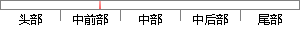

当企业或者学校等单位需要发布问卷时，可以利用该系统在线编辑问卷并发放出去用于调查数据，最后通过系统了解到答卷的统计数据来做出相应的应对措施。
片段位置图

相似结果|
1
原句片段：数据，最后通过系统了解到答卷的统计数据来做出相应的应对措施。
相似片段 1：2.4数据统计评价系统不完善。环境综合分析报告做出了...才能采取相应的应对办法,但是,由于中国相关专业的人才...监督管理措施,通过制度约束来保证企业提供的数据真实...
|
※ 片段修改建议 ※
近似词参考：- 或者：或 大概
- 学校：黉舍
- 单位：单元
- 需要：必要
- 发布：公布
- 利用：操纵 哄骗 使用 行使 应用
- 系统：体系
- 编辑：编纂
- 调查：查询拜访 观察
- 最后：末了
- 通过：经由过程
- 系统：体系
- 了解：领会 认识 相识
- 相应：响应
- 应对：应答
- 措施：办法 步伐
系统自动生成语句：当企业或黉舍等单元必要公布问卷时，可以操纵该体系在线编纂问卷并发放出去用于查询拜访数据，末了经由过程体系领会到答卷的统计数据来做出响应的应答办法。
注：本片段修改建议为系统自动生成，仅供参考。